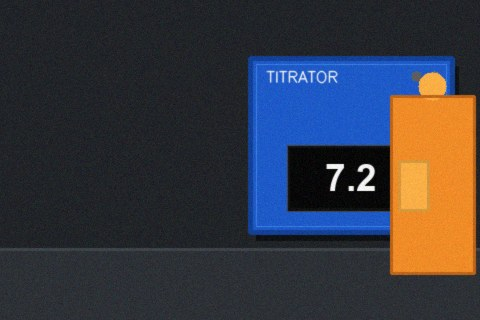

LabScribe 原理与链路详解
面向想真正理解这个项目的人：先讲清楚为什么这么设计，再看关键代码，最后用真实运行数据走完一遍。 文中代码均来自当前仓库，可以对照
labscribe/下同名文件阅读。
0. 一分钟速览
LabScribe 做一件事：把摄像头里的"人在用仪器做实验"自动变成可以审计的实验日志。
三个数字概括它：
| 数字 | 含义 |
|---|---|
| 1 帧 | 人工复核一条记录只需要看 1 张原始画面 |
| 4 类事件 | session_start / reading_change / session_end / anomaly |
| 8 个工具 | LLM 能调用的确定性动作，所有副作用都要经过它们 |
它不训练自己的视觉模型，也不让 LLM 直接看视频。整条链路是：
画面 → 检测/跟踪 → OCR 读数 → 稳定化 → 规则状态机 → 事件 → LLM 工具调用 → 记录/告警/SOP
1. 一句话原理与贯穿全文的类比
类比：实验室里有一位"不眨眼的实习生"和一个"只按规矩办事的书记员"。
- 实习生（视觉层） 盯着仪器屏幕，但他不是每看一眼就汇报——他要连续几次看到同一个数字才敢记下来；
- 记录员（事件层） 把实习生的碎碎念剪成"开始干活了 / 数变了 / 干完了 / 出事了"四类镜头；
- 书记员（Agent） 拿着 SOP 手册，检查"第几步了、读数对不对、该写哪一栏"，然后用笔写进台账；
- 档案室（存储层） 每一条台账都钉着当时的照片，任何一条都能翻回原始那一帧；
- 如果书记员请假（LLM 超时/没 key），有代理书记员按同样的模板把台账写完，绝不会漏页。
这个类比对应到代码里的五层，后面每层都会展开。
| 类比角色 | 对应模块 | 职责 |
|---|---|---|
| 实习生 | labscribe/vision/ |
检测、跟踪、OCR、读数稳定 |
| 记录员 | labscribe/events/ |
连续帧 → 离散事件 |
| 传送带 | labscribe/runtime.py |
视觉线程 → 队列 → Agent 线程 |
| 书记员 | labscribe/agent/ |
LLM + 工具调用 + 规则回退 |
| 档案室 | labscribe/store/ |
SQLite + 原始帧 + 追溯 |
2. 全局链路图
┌──────────────────────────── ① 视觉层（每个视频帧） ────────────────────────────┐
│ │
│ Frame ──► Detector ──► Tracker ──► 选出 instrument + 最近的 actor │
│ YOLO11 ByteTrack │ │
│ ▼ │
│ 显示区被遮挡？── 是 ──► 不 OCR（不伪造读数） │
│ │ 否 │
│ ▼ │
│ 每 N 帧节流一次 OCR（PaddleOCR / 模板） │
│ │ │
│ ▼ │
│ ReadingStabilizer（连续 3 次一致才算数） │
└──────────────────────────────────────────┬───────────────────────────────────┘
│ Observation
│ {actor, object, action, reading,
│ confidence, frame_id, occluded}
┌──────────────────────────────────────────▼───────────────────────────────────┐
│ ② 事件层 RuleStateMachine（每个观测） │
│ │
│ session_start（连续 N 帧有人） reading_change（稳定值与上次差 > 容差） │
│ session_end（人离开 > 1.2s） anomaly（读数超出 [min,max]） │
│ │
│ 置信度 < 0.55 ──► 不改状态，进 PendingCandidate（待人工确认） │
└──────────────────────────────────────────┬───────────────────────────────────┘
│ LabEvent（带 event_id + source_frame）
▼
queue.Queue ← 视觉线程只放不取，不阻塞
│
┌──────────────────────────────────────────▼───────────────────────────────────┐
│ ③ Agent 层 LabAgent（每个事件一次完整回合） │
│ │
│ system: 角色 + SOP + 硬规则 │
│ user: 事件 JSON + 会话上下文 + 确定性规划建议 │
│ │ │
│ ▼ │
│ deepseek-flash ⇄ 8 个工具（校验/写记录/推进步骤/告警） │
│ │ │
│ 每个工具调用 → agent_steps 表（参数、返回值、耗时，可回放） │
│ LLM 失败 → 规则 Agent；模型漏写 → 安全网补写 │
└──────────────────────────────────────────┬───────────────────────────────────┘
│
┌────────────────────────────┼────────────────────────────┐
▼ ▼ ▼
records（台账） alerts（告警） frames/*.jpg
带 event_id 关联 event_id 按需落盘
│ │ │
└────────────► 追溯：record → event → source_frame ◄──────┘
关键点：视觉线程和 Agent 线程解耦。LLM 一次要 2–4 秒，画面不能停；所以视觉侧只管往队列里丢事件，Agent 侧慢慢处理。Demo 里 140 帧只处理了约 1.4 秒（不含 LLM），8 个事件全部正确入队。
# labscribe/runtime.py（节选）
def _vision_loop(self, source, pipeline: VisionPipeline) -> None:
...
for frame in source.iter_frames():
if self._stop.is_set():
break
self.frame_store.keep(frame) # 环形缓冲，供追溯
observations = pipeline.process(frame) # ① 视觉
for event in self.processor.handle_observations(observations): # ② 事件
self.agent_queue.put(event) # 传送带：不阻塞
self.events_emitted += 1
self.bus.publish("observation_event", event.to_dict())
self.frames_processed += 1
...
self.agent_queue.put_nowait(None) # 收尾信号
def _agent_loop(self) -> None:
while True:
try:
item = self.agent_queue.get(timeout=0.25) # ③ Agent 慢慢消费
except queue.Empty:
if self._vision_done.is_set() or self._stop.is_set():
break
continue
if item is None:
...
break
result = self.agent.handle_event(item)
self.bus.publish("agent", result.to_dict())
3. 第 1 层：视觉层 —— 从像素到"可信读数"
3.1 为什么不能每帧都信
类比：看温度计。 你瞥一眼是 36.5，再看一眼是 36.8，第三眼又回到 36.5。你不会立刻把三个数都记进实验记录——你会等它稳定。
如果直接把每帧 OCR 结果写进记录，会出现三类垃圾数据：
- 抖动：数字 7.2 / 7.3 / 7.2 来回跳，无法判断真实值；
- 遮挡：手挡住半个屏幕，OCR 把 "1" 读成 "7"；
- 空帧：显示区被完全遮住，OCR 返回垃圾或空串。
所以视觉层做四件事：检测 → 跟踪 → 节流 OCR → 稳定化。
3.2 检测与跟踪：谁在看哪台仪器
# labscribe/vision/pipeline.py
def process(self, frame: Frame) -> list[Observation]:
raw = self.detector.detect(frame)
detections = self.tracker.update(
[d for d in raw if d.confidence >= self.min_detection]
)
actors = [d for d in detections if d.label == "actor"]
instruments = [d for d in detections if d.label == "instrument"]
observations: list[Observation] = []
for inst in instruments:
observations.append(self._observe(frame, inst, actors))
self.last_observations = observations
return observations
Detector：生产环境是 YOLO11，离线是MarkerDetector（颜色标记）。角色只有两种：actor（人/手）和instrument（仪器）。分类映射在vision.class_map。Tracker：生产环境 ByteTrack，离线是 IoU 跟踪器。它保证同一台仪器在连续帧里拿到稳定的 track_id，不会一会instrument-1一会instrument-2。object_id：配置里可以把类别映射成固定 ID（instrument-1），生产环境可用 track id 区分多台同类仪器。
类比：跟踪就像给每个"演员"贴胸牌。 帧与帧之间演员会移动，但胸牌号不变，这样"读数变化"才能归到同一个对象名下。
3.3 显示区裁剪 + OCR 节流 + 遮挡
# labscribe/vision/pipeline.py（_observe 节选）
display_roi = self._display_roi(inst)
state = self._state(object_id)
closest_actor = self._closest_actor(inst, actors)
actor_present = closest_actor is not None
occluded = False
if closest_actor is not None:
occluded = closest_actor.bbox.coverage(display_roi) >= self.occlusion_ratio
due_ocr = (
not occluded
and frame.index - state.last_ocr_frame >= self.ocr_every_n
and frame.ts - state.last_ocr_ts >= self.ocr_min_interval
)
if due_ocr:
result = self.ocr.read(frame.image, display_roi)
...
elif occluded:
stable = state.stabilizer.update(frame.ts, None, 0.0) # 遮挡=没看到，不是读数 0
state.stable_now = False
state.stable_value = None
三个设计点：
- 只裁显示区：整帧 OCR 又慢又容易读到标签文字（TITRATOR）。显示区按仪器框的固定比例裁剪（
vision.display_roi = [0.20, 0.52, 0.80, 0.86]）。 - 按帧节流：
ocr_every_n_frames=3，10 fps 下每 0.3 秒读一次。OCR 是整条视觉链路最贵的一步。 - 遮挡 ≠ 0：手挡住时传
None，而不是0.0。这很重要——如果传 0，状态机会认为"读数变成 0 了"，写出一条假记录。传None表示"这一帧没有可信观测"。
类比：实习生被手挡住时会说"没看清"，而不是"我看到 0"。
3.4 读数稳定器（本项目最巧的一小段代码）
# labscribe/vision/stability.py
def update(self, ts: float, value: float | None, confidence: float = 1.0) -> StableReading:
if self._last_ts is not None and ts - self._last_ts > self.max_gap_s:
self._samples.clear()
self._last_stable = None
...
self._last_ts = ts
if value is None or confidence <= 0:
return StableReading(value=self._last_stable, ..., stable=False, changed=False)
self._samples.append((float(ts), float(value), float(confidence)))
self._samples = [s for s in self._samples if s[0] >= ts - self.max_gap_s]
if len(self._samples) < self.stable_samples:
return StableReading(..., stable=False)
window = self._samples[-self.stable_samples :]
values = [s[1] for s in window]
mean = sum(values) / len(values)
spread = max(values) - min(values)
tolerance = self.tolerance_abs + self.tolerance_rel * abs(mean)
if spread > tolerance:
return StableReading(..., stable=False) # 还在跳，不认
stable_value = values[-1]
changed = False
if self._last_stable is None or abs(stable_value - self._last_stable) > tolerance:
changed = self._last_stable is not None # 第一次稳定不算"变化"
self._last_stable = stable_value
...
return StableReading(value=self._last_stable, stable=True, changed=changed)
逐条翻译：
| 条件 | 含义 |
|---|---|
距上次样本超过 max_gap_s=2.0s |
断档太久，旧基线作废，重新开始 |
None / 置信度 0 |
空帧或遮挡，保留上一次稳定值，但标记 stable=False |
样本不足 stable_samples=3 |
继续观察，不输出稳定值 |
| 窗口极差 > 容差 | 读数还在跳，不认 |
| 与上次稳定值差 > 容差 | 真正的"读数变更"，且只发一次 |
容差不是固定值，而是：
tolerance = tolerance_abs + tolerance_rel × |mean|
= 0.25 + 0.01 × |读数|
类比：菜市场的电子秤。 秤上放东西时数字会抖，你会等它停；如果两个人同时往上放，你还会等更久。而且"跳 0.1 克"你不当回事，"跳 5 克"你才会重新称。这里就是同一个逻辑：静差容忍、突变才记录。
为什么 changed 只发一次？ 因为读数稳定后，每一帧都会满足"稳定"，如果不做状态记忆，就会每帧写一条 reading_change——一个 10 秒的实验能写出 100 条重复记录。
3.5 真实输出长什么样
{
"frame_id": "demo-00098",
"detections": [
{"label": "instrument", "confidence": 0.99, "bbox": [247, 55, 455, 235]},
{"label": "actor", "confidence": 0.9593, "bbox": [390, 73, 476, 275]}
],
"display_roi": [290.4, 148.48, 411.6, 207.64],
"ocr": {"text": "7.2", "value": 7.2, "confidence": 0.9431, "ok": true},
"reading_stabilizer": {"samples": 3, "window_seconds": 0.9, "stable_value": 7.2}
}
4. 第 2 层：事件层 —— 把"读数流"剪成"事件"
4.1 为什么需要状态机
类比：看监控回放。 你要的不是"第 1 帧有人、第 2 帧有人、……第 140 帧没人"，而是"他 1.4 秒开始用滴定仪，4.8 秒读数变了，6.7 秒走了"。
状态机就是那个"剪辑师"。它每个观测只做很少的判断，但因为有记忆（_ObjectState），所以能识别出"一段连续行为"。
@dataclass
class _ObjectState:
phase: str = "idle" # idle / active
session_id: str | None = None # 当前会话
interact_frames: int = 0 # 连续"有人在操作"的帧数
last_interact_ts: float | None = None # 最后一次看到人的时间
last_reading: float | None = None # 上一次稳定读数
last_anomaly_reading: float | None = None
4.2 会话开始：连续 N 帧才算
# labscribe/events/state_machine.py
def _session_transitions(self, obs, state, out):
if obs.action == "interacting":
if state.phase == "idle":
state.interact_frames += 1
if state.interact_frames >= self.start_frames:
state.phase = "active"
state.session_id = new_id("sess")
state.last_interact_ts = obs.ts
...
out.events.append(self._event("session_start", obs, obs.confidence, ...))
else:
state.interact_frames = 0
state.last_interact_ts = obs.ts
else:
state.interact_frames = 0
if (state.phase == "active"
and obs.ts - state.last_interact_ts >= self.end_idle_s):
out.events.append(self._event("session_end", obs, obs.confidence, ...))
state.phase = "idle"
state.session_id = None
session_start_frames=3：路过镜头、误检、单帧闪烁都不会触发"开始实验"。session_end_idle_s=1.2：人离开 1.2 秒才判定结束。短暂转身拿东西不算结束。
类比：电梯关门键。 按一下不动，连按三下才关门——防误触。
4.3 读数变更：带"上一次值"的证据
if obs.reading_stable and obs.reading is not None:
if state.last_reading is None:
state.last_reading = obs.reading # 建立基线，不发事件
elif abs(obs.reading - state.last_reading) > self.reading_tol:
event = self._event(
"reading_change", obs, effective, reading=obs.reading,
meta={"previous_reading": state.last_reading, ...},
)
out.events.append(event)
state.last_reading = obs.reading
注意事件里带了 previous_reading。这不是装饰——Agent 写记录时可以直接引用"3.5 → 7.2"，人工复核也一眼能看出改了哪一栏。
4.4 异常：独立于"变更"的第二道闸
读数既会触发 reading_change（因为变了），也会触发 anomaly（因为超限）。两者故意分开：
reading_change是"发生了什么"；anomaly是"这件事是否违规"。
limits = self.limits.get(obs.object_id) # 例如 instrument-1: [0, 14]
if limits and obs.reading is not None and effective >= 0.3:
low, high = float(limits.get("min", 0.0)), float(limits.get("max", 1e9))
if obs.reading < low or obs.reading > high:
already_flagged = (
state.last_anomaly_reading is not None
and abs(obs.reading - state.last_anomaly_reading) <= self.reading_tol
)
if not already_flagged:
...
out.events.append(self._event("anomaly", obs, effective, reading=obs.reading, meta=meta))
state.last_anomaly_reading = obs.reading
already_flagged 保证同一个超限值不会每帧告警一次。
4.5 置信度取"最小值"（容易忽略的细节）
reading_conf = obs.reading_confidence if obs.reading_confidence is not None else 1.0
effective = min(detection_conf, float(reading_conf))
if detection_conf >= self.min_conf:
self._session_transitions(obs, state, out)
else:
... # 只累积候选，不改状态
一次观测有两份置信度：
- 检测置信度：仪器认得准不准；
- OCR 置信度：读数读得准不准。
取 min 意味着：仪器检测很准但数字读糊了，也不能算可信。
类比：双人签字。 会计和出纳都签字才能付款；任何一个人说"我看不清"，这笔账就挂起。
4.6 低置信度 → 待确认队列
# 低置信度不会改变状态，只累积"候选"
if detection_conf >= self.min_conf:
self._session_transitions(obs, state, out)
else:
if obs.action == "interacting" and state.phase == "idle":
state.interact_frames += 1 # 证据仍要累积
...
candidate = self._session_candidate(obs, state)
if candidate is not None:
out.pending.append(candidate)
为什么"不改状态、只累积证据"？因为置信度低时仍然可能有 3 帧连续的弱信号。如果直接丢弃，第二天的模糊场景就会漏记。现在它会被放进 pending 表，Dashboard 上人工点一下"确认"，就会生成一个 human_confirmed 事件，并继续交给 Agent 写记录。
# labscribe/events/processor.py
def confirm_pending(self, pending_id: str) -> dict[str, Any] | None:
item = self.db.get_pending(pending_id)
if item is None or item.get("status") != "open":
return None
event = LabEvent.from_dict(item["draft_event"])
event.event_id = new_event_id()
event.status = "human_confirmed"
event.meta["confirmed_from_pending"] = True
self.record_event(event)
self.db.resolve_pending(pending_id, "confirmed")
return {"pending_id": pending_id, "status": "confirmed", "event": event.to_dict()}
类比：收银台的"待核筐"。 扫不清的商品先放一边，不影响后面结账；人工确认后补扫，账照样完整。
4.7 Demo 的 8 个事件（真实输出）
t= 1.40s session_start reading=0.0 conf=0.99 frame=demo-00014
t= 4.80s reading_change reading=3.5 conf=0.83 frame=demo-00048
t= 6.70s session_end reading=3.5 conf=0.99 frame=demo-00067
t= 7.40s session_start reading=3.5 conf=0.99 frame=demo-00074
t= 9.80s reading_change reading=7.2 conf=0.94 frame=demo-00098
t=11.60s reading_change reading=15.2 conf=0.88 frame=demo-00116
t=11.60s anomaly reading=15.2 conf=0.88 frame=demo-00116
t=13.30s session_end reading=15.2 conf=0.99 frame=demo-00133
注意第 5 条：屏幕上 8.4 秒就变成了 7.2，但手在 8.1–9.1 秒遮挡，所以系统等到 9.8 秒手移开、读数稳定后才确认。这就是"遮挡不伪造读数"的直接效果。
5. 第 3 层：运行时 —— 两条线程与一条传送带
类比：厨房。 备菜师傅（视觉）手很快，炉子（LLM）很慢。备好的菜放在出餐口（队列），炉子有空就取一份。备菜不会因为炉子忙而停下。
Vision thread ──► queue.Queue ──► Agent thread
~1.3 ms/帧 事件 一次 LLM 2–4 s
为什么必须解耦？数字很直观：
| 环节 | 单次耗时 |
|---|---|
| 视觉一帧（离线后端） | ≈ 1.3 ms |
| 一次 OCR | 数毫秒–数十毫秒 |
| 一次 LLM 工具回合 | 2000–4000 ms |
如果同步处理，摄像头会卡成幻灯片。解耦后，视觉侧 140 帧 1.4 秒跑完，Agent 侧按自己的节奏消化 8 个事件。
线程安全收尾也做了：
def stop(self, timeout: float = 5.0) -> dict[str, Any]:
self._stop.set()
self.agent_queue.put_nowait(None)
for thread in (self._vision_thread, self._agent_thread):
if thread and thread.is_alive():
thread.join(timeout=timeout)
...
每次 start() 重建 RuleStateMachine 和 EventProcessor，避免上一次运行的会话状态串到下一次（有专门测试 test_runtime_can_rerun_a_scenario_without_state_bleed）。
6. 第 4 层：Agent —— LLM 只做决策，不做感知
6.1 为什么不让 LLM 直接看视频
这是整个项目最重要的取舍。
| 方案 | 每帧成本 | 时序稳定性 | 可审计性 | 可离线复现 |
|---|---|---|---|---|
| LLM 逐帧看画面 | 极高（每帧一次多模态调用） | 差（模型对"同一数字"可能给出不同回答） | 差（推理过程不可复现） | 差 |
| 事件化后 LLM 决策 | 低（一个事件一次调用） | 好（稳定器 + 规则先筛） | 好（输入是结构化 JSON） | 好（同一事件必得同一输入） |
类比：CEO 不需要看每个员工的电脑屏幕。 他需要的是周报（事件），然后基于周报做决策（工具调用）。周报的统计口径由系统保证，CEO 只负责按制度办事。
LLM 的能力用在正确的地方：理解 SOP、选择工具、组织措辞、处理边界情况，而不是"看像素"。
6.2 一次 Agent 回合的真实输入
Event:
{"event_id": "evt-34e70dd8191f", "type": "reading_change", "ts": 9.8,
"object_id": "instrument-1", "actor_id": "actor-3", "action": "interacting",
"reading": 7.2, "confidence": 0.9365, "source_frame": "demo-00098",
"session_id": "sess-7c19c8d1f8bf",
"meta": {"previous_reading": 3.5, "limits": {"min": 0.0, "max": 14.0}}}
Session context:
{"completed_steps": ["S1"],
"next_step": {"id": "S2", "name": "加入样品", "expected_reading": null},
"recent_events": [ ...5 条... ],
"recent_records": [ ...1 条... ]}
Planner guidance (deterministic, derived from the SOP):
{"current_step": {"id": "S2", ...},
"recommended_actions": [
{"tool": "validate_step_order", "arguments": {...}, "why": "..."},
{"tool": "validate_reading", "arguments": {...}, "why": "..."},
{"tool": "write_experiment_record", "arguments": {...}, "why": "..."},
{"tool": "advance_sop_step", "arguments": {...}, "why": "..."}]}
三块内容分工：
- Event：唯一事实来源。模型被要求"不许编造事件里没有的读数/时间/帧"。
- Session context：让模型知道"上下文到哪了"，避免它重复写记录或跳步。
- Planner guidance：由确定性代码根据 SOP 算出的建议动作。
6.3 为什么还要"规划建议"（很关键）
最初版本只给模型 system + event + context。实测发现一个真实问题：模型过度保守——明明读数在范围内，它只写记录、不肯推进 SOP 步骤，导致流程停在 S1。
原因不是模型笨，而是"推进步骤"这件事需要判断"这一步是否真的做完"，单看一个事件信息不足。所以我们加了一层确定性规划：用和规则 Agent 相同的逻辑算出建议动作，作为参考给模型。
它不替模型决策：
- 模型仍然自己选工具、自己组织 summary 措辞；
- 工具层仍然独立校验（越序会被拒绝）；
- 真实效果：LLM 从"停在 S1"变为"S1→S2→S3 正常推进"。
类比：实习生带着一份"建议操作清单"去找主管签字。 清单是系统自动生成的，主管可以采纳、可以改，但签字前仍要自己核对。
6.4 8 个工具与"门禁"设计
| 工具 | 性质 | 门禁 |
|---|---|---|
get_sop_step |
读 | 未知实验/步骤报错 |
validate_step_order |
读 | 返回 allowed，越序明确说明期望步骤 |
validate_reading |
读 | 与步骤 expected_reading 比范围 |
write_experiment_record |
写 | event_id 必须真实存在；幂等；继承 source_frame |
advance_sop_step |
写 | 内部再次校验顺序，越序拒绝；SOP 进度按实验持久化 |
raise_alert |
写 | severity 白名单 |
get_recent_events |
读 | limit 上限 |
get_session_context |
读 | — |
最重要的门禁：write_experiment_record 不允许模型提供帧号。
# labscribe/agent/tools.py
event_id = str(args["event_id"])
event = self.db.get_event(event_id)
if event is None:
return {"ok": False, "error": f"event_id not found: {event_id}"}
...
record = ExperimentRecord(
record_id=new_id("rec"),
experiment_id=str(args["experiment_id"]),
session_id=event.get("session_id") or ctx.session_id() or "adhoc",
step_id=step_id,
event_id=event_id,
source_frame=event.get("source_frame") or "", # ← 从数据库反查，不信模型
object_id=event.get("object_id") or "",
reading=event.get("reading"), # ← 同样反查
...
)
dedupe_key = f"{event_id}|{step_id or '-'}"
saved, created = self.db.save_record(record, dedupe_key)
return {
"ok": True,
"created": created,
"deduped": not created,
"record_id": saved.get("record_id"),
"source_frame": saved.get("source_frame"),
"frame_url": f"/api/frames/{saved.get('source_frame')}" if saved.get("source_frame") else None,
...
}
这消灭了整类问题：模型幻觉出一条"读数 99，帧 abc.jpg"的记录是不可能的——工具会拿 event_id 去库里查，查不到就报错；查到了就用事件里的真实读数与真实帧。
类比：报销单系统。 你只要填"行程编号"，金额和发票照片由系统从订单里自动带出，不给你手填的机会。
幂等：dedupe_key = event_id|step_id 是 SQLite 唯一索引。同一事件同一步骤重复写，返回 deduped=true 和原记录，不会产生两行台账。
6.5 LLM 循环
# labscribe/agent/loop.py（节选）
messages = [
{"role": "system", "content": self._system_prompt()},
{"role": "user", "content": f"Event:\n{...}\n\nSession context:\n{...}\n\n"
f"Planner guidance (deterministic, derived from the SOP):\n{...}"},
]
for _ in range(self.max_steps): # 默认 8 步，防死循环
response = self.llm.chat(messages, tools=self.tools.schemas())
logger.log("assistant", content=response.content, latency_ms=response.latency_ms,
result={"tool_calls": [tc.name for tc in response.tool_calls]})
if not response.tool_calls:
return AgentResult(run_id, "completed", "llm", response.content, event.event_id, ...)
messages.append({"role": "assistant", "content": response.content or "",
"tool_calls": response.raw_tool_calls})
for call in response.tool_calls:
if call.error:
result = {"ok": False, "error": call.error}
logger.log("tool", tool=call.name, arguments=call.arguments, result=result)
else:
result = logger.call(self.tools, call.name, call.arguments, ctx)
messages.append({"role": "tool", "tool_call_id": call.id,
"content": json.dumps(result, ensure_ascii=False, default=str)})
一个事件通常 1–3 轮：第 1 轮并发发出"校验顺序 + 校验读数"；第 2 轮写记录并推进步骤；第 3 轮给结束语。实测单事件 2.0–3.9 秒。
6.6 规则回退
类比：书记员请假，代理书记员照着模板继续写。
try:
if self.mode == "llm":
result = self._run_llm(event, run_id, ctx, logger)
else:
result = self._run_rules(event, run_id, ctx, logger)
except LLMError as exc:
if self.mode == "llm" and self.fallback_to_rules:
result = self._run_rules(event, run_id, ctx, logger)
result.status = "fallback_rules"
result.summary = f"LLM 不可用，已回退到规则 Agent：{exc}"
result.error = str(exc)
触发条件包括：没 key、超时、429/5xx（带 2 次重试后）。运行记录里 status=fallback_rules，能一眼看出这条记录不是 LLM 写的。
6.7 安全网：保证"每条事件都有台账"
def _ensure_traceability(self, event, ctx, logger) -> None:
if self.db.record_for_event(event.event_id) is None:
logger.call(self.tools, "write_experiment_record", {
"experiment_id": self.experiment_id,
"event_id": event.event_id,
"summary": f"自动补录：{self._rule_summary(event)}",
"note": "safety net: agent did not write a record",
}, ctx)
if event.type == "anomaly" and not self.db.alerts_for_event(event.event_id):
logger.call(self.tools, "raise_alert", {"severity": "critical", ...}, ctx)
无论 LLM 返回什么、是否报错，每条事件最终至少有一条记录；anomaly 最终至少有一条告警。这不是为了"掩盖失败"，而是为了让审计链不断裂——补写会明确标注 safety net。
7. 第 5 层：存储与追溯 —— 每本台账钉一张照片
7.1 数据表
| 表 | 内容 | 关键字段 |
|---|---|---|
events |
事件 | event_id, source_frame, session_id, status |
records |
实验记录 | event_id, step_id, source_frame, agent_run_id, dedupe_key 唯一 |
pending |
低置信度候选 | kind, reason, payload（草稿事件） |
alerts |
告警 | event_id, severity, message |
agent_runs / agent_steps |
Agent 轨迹 | 每次工具调用的参数、结果、耗时 |
sessions / step_state |
会话与 SOP 进度 | progress:<experiment> 跨会话保留 |
frames |
已落盘帧索引 | frame_id → 文件路径 |
7.2 帧不是全存，是按需存
类比：监控录像不会永远保留，但"事故片段"要永久保留。
7×24 摄像头一天几十万帧，全存会撑爆磁盘。FrameStore 用内存环形缓冲（默认 240 帧）保住最近画面，只有被事件或待确认项引用时才写 JPEG：
# labscribe/store/frames.py
def keep(self, frame: Frame) -> None:
self._buffer[frame.frame_id] = frame
self._buffer.move_to_end(frame.frame_id)
while len(self._buffer) > self.max_buffered:
self._buffer.popitem(last=False)
def persist(self, frame_id: str) -> str | None:
if not frame_id:
return None
cached = self._persisted.get(frame_id)
if cached:
return cached
frame = self._buffer.get(frame_id)
if frame is None:
row = self.db.get_frame(frame_id)
return row["path"] if row else None
path = self.frames_dir / f"{frame_id}.jpg"
if not path.exists():
cv2.imwrite(str(path), frame.image, [int(cv2.IMWRITE_JPEG_QUALITY), 88])
self.db.save_frame(frame_id=frame_id, path=str(path), ts=frame.ts, ...)
self._persisted[frame_id] = str(path)
return str(path)
7.3 追溯链：一条命令回到原始画面
ExperimentRecord.record_id
│ event_id
▼
LabEvent { ... source_frame: "demo-00098" }
│
▼
data/frames/demo-00098.jpg
│
▼
GET /api/records/{record_id}/trace
→ {record, event, frame{url}, agent_runs, trace_chain: ["record","event","frame"]}
类比：每张发票订着一张当时的收银台照片。 财务不用调视频，看照片就能确认"这笔账是不是在那台机器上发生的"。
8. 完整走一遍：读数 7.2 的真实旅程
以真实运行数据为例（deepseek-flash）：
| 阶段 | 真实内容 |
|---|---|
| 输入帧 | demo-00098, t=9.8s |
| 检测 | instrument 0.99 [247,55,455,235]；actor 0.9593 [390,73,476,275] |
| 显示区 | [290.4, 148.48, 411.6, 207.64] |
| OCR | "7.2"，置信度 0.9431 |
| 稳定化 | 连续 3 个样本（0.9s 窗口）一致 → 稳定值 7.2 |
| 事件 | reading_change，event_id=evt-34e70dd8191f，previous_reading=3.5 |
| LLM 第 1 轮 | 并发调用 validate_step_order(S2) + validate_reading(S2, 7.2) |
| 工具返回 | allowed=true；checked=false（S2 无期望范围） |
| LLM 第 2 轮 | write_experiment_record + advance_sop_step(S2) |
| 记录 | rec-311db1546459，source_frame=demo-00098，step_id=S2 |
| SOP | completed=["S1","S2"]，next=S3 |
| 最终答复 | "已记录 evt-34e70dd8191f：instrument-1 读数由 3.5 mL 变为 7.2 mL，S2 无期望范围校验通过并已完成，下一步进入 S3 开始滴定。" |
对应原始画面（半透明橙色是操作者，显示区读数 7.2）：

这张图就是
data/frames/demo-00098.jpg，也是/api/records/rec-311db1546459/trace返回的那一帧。
异常链路（同一 Demo 的 15.2）
事件: {"type": "anomaly", "reading": 15.2, "source_frame": "demo-00116"}
工具: raise_alert(severity="critical") + write_experiment_record(...)
告警: 异常读数 15.2 超出允许范围 [0.0, 14.0]
SOP: completed=["S1","S2","S3"], next="S4" ← 超限，S4 拒绝推进
为什么超限就不推进？ 因为 S4 是"到达终点"，期望范围 3.0–14.0。读数 15.2 意味着终点判定不可信（可能过量滴定），此时推进步骤会把错误固化进流程。
9. 评测是怎么做的（为什么敢说 100%）
9.1 数据集
data/eval/annotations.jsonl：100 个标注场景，414 个标注事件。
| 事件类型 | 数量 |
|---|---|
session_start |
136 |
session_end |
136 |
reading_change |
128 |
anomaly |
14 |
每个场景还注入了真实的困难：
- 20 个场景（20%）在读数变更时用手遮挡显示区；
- 随机检测丢帧（连续 2–4 帧仪器/人完全检测不到）；
- 随机 OCR 空帧（显示区是黑的）。
每条标注包含：类型、物理时刻、允许匹配窗口、期望读数、是否遮挡。
9.2 匹配规则
对每条标注：
在同类型、未被使用的预测里，优先找落在窗口内的
取时间最接近的那条，一对一匹配
窗口外 = 漏检（FN）；没被匹配的预测 = 误报（FP）
延迟 = 预测时刻 − 标注时刻（锚定物理变化时刻，而不是检测时刻），所以能真实反映"系统多久才确认"。
9.3 结果（离线后端）
| 指标 | 结果 |
|---|---|
| 事件 precision / recall / F1 | 100% / 100% / 100%（414/414） |
reading_change |
128/128，平均延迟 0.92s，p95 1.58s |
session_start |
136/136，平均延迟 0.26s |
session_end |
136/136，平均延迟 0.02s |
anomaly |
14/14，平均延迟 0.97s |
| 事件读数准确率 | 100%（142 个读数） |
| 可见帧 OCR 准确率 | 100%（3,709 帧） |
| 遮挡 recall | 100%（23/23） |
| 帧处理耗时 | 1.26 ms/帧（CPU） |
9.4 必须说清楚的一点
这个基准用的是与合成渲染器同源的离线检测/OCR 后端。它验证的是：
- 事件折叠逻辑是否正确；
- 稳定器是否真的防抖；
- 遮挡/丢帧时是否不伪造数据；
- 追溯链是否完整。
它不代表真实摄像头上的模型精度。生产环境要装 requirements-vision.txt，用真实标注重跑：
python -m labscribe eval
报告会记录当时用的是哪套后端（system.detector/tracker/ocr），避免误读。
10. 设计取舍 FAQ
Q1：为什么不直接让 VLM 看图写记录？ 贵（每帧一次多模态调用）、慢（无法跟上 10 fps）、不稳定（同一画面不同回答）、不可复现（审计要的是确定性）。项目的做法是"轻量视觉保证事实，LLM 负责决策"。
Q2：为什么异常要单独一个事件，不合并进 reading_change？ 职责不同：变更描述事实，异常描述违规。合并后，"写记录"和"告警"会耦合，且无法单独统计告警准确率。
Q3：为什么 SOP 进度不是按 session 记？
人离开 1.2 秒再回来，会开始一个新 session，但实验没重做。所以进度键用 progress:<experiment_id>，跨视觉会话保留（见 LabTools._progress_key）。
Q4：LLM 写重复记录怎么办？
唯一索引 (event_id, step_id) + INSERT OR IGNORE，重复写入返回 deduped=true 和原记录。
Q5：LLM 编造读数/帧号怎么办？
工具层只接受 event_id，读数和帧从数据库反查；查不到直接报错。模型没有写任意字段的自由。
Q6：LLM 不可用怎么办？
自动规则回退（fallback_rules）+ 安全网补写。实验记录不会断，只是措辞变成模板。
Q7：为什么评测延迟有 0.9 秒级？
因为稳定器要求连续 3 次 OCR 一致（10 fps × 每 3 帧一次 → 约 0.9s），加上事件匹配。这是故意的：用延迟换准确率与防抖。可调 ocr_every_n_frames / stable_samples 权衡。
Q8：多台仪器/多人怎么办？
object_id_map 可把类别映射为固定 ID；生产环境用 track id 区分同类仪器。操作者按与仪器区域重叠面积最大者分配（当前实现，README 已列为限制）。
11. 代码地图
labscribe/
├─ schema.py # BBox / Detection / Frame / Observation / LabEvent / SOP / Record
├─ config.py # YAML + .env + 环境变量覆盖
├─ runtime.py # 两条线程、事件队列、生命周期
├─ cli.py # simulate / run / serve / eval / trace / pending / stats
├─ vision/
│ ├─ synthetic.py # 确定性合成实验场景（仪器、手、读数、遮挡、丢帧）
│ ├─ detector.py # MarkerDetector / Yolo11Detector
│ ├─ tracker.py # IoUTracker / ByteTrackTracker
│ ├─ ocr.py # TemplateOCR / PaddleOCRBackend
│ ├─ stability.py # ReadingStabilizer（防抖）
│ ├─ pipeline.py # 检测→跟踪→遮挡判断→节流 OCR→Observation
│ └─ frame_source.py # camera / video / images / synthetic
├─ events/
│ ├─ state_machine.py # 连续帧 → 四类事件 + pending 候选
│ ├─ processor.py # 落库、帧持久化、会话、pending 确认
│ └─ bus.py # 进程内事件总线
├─ agent/
│ ├─ llm.py # OpenAI 兼容客户端 + tool call 解析 + 重试
│ ├─ tools.py # 8 个工具 + JSON Schema + 门禁
│ └─ loop.py # LLM 循环 / 规划建议 / 规则回退 / 安全网
├─ store/
│ ├─ db.py # SQLite（events/pending/records/alerts/runs/steps）
│ └─ frames.py # 环形缓冲 + 按需 JPEG
├─ eval/
│ ├─ dataset.py # 100 场景生成/加载
│ └─ harness.py # 匹配、指标、遮挡子集、报告
└─ api/
├─ app.py # FastAPI
└─ static/index.html # Dashboard
推荐阅读顺序：
schema.py—— 所有数据结构，先建立词汇表；vision/stability.py+vision/pipeline.py—— 最早产生"可信数据"的地方；events/state_machine.py—— 核心业务逻辑，也是最值得改的地方；agent/tools.py—— 所有副作用与门禁；agent/loop.py—— LLM 如何被约束；runtime.py—— 线程与生命周期；eval/harness.py—— 如何证明它有效。
12. 如何扩展
| 想做的事 | 改哪里 | 说明 |
|---|---|---|
| 换真实检测/跟踪/OCR | configs/default.yaml 的 vision.detector/tracker/ocr |
装 requirements-vision.txt，接口不变 |
| 支持新仪器 | vision.class_map + vision.object_id_map + events.limits |
仪器类别映射与读数范围 |
| 换实验流程 | 新增 data/sop/*.yaml，改 agent.experiment_id |
步骤、指令、期望范围 |
| 调整灵敏度 | events.* 与 vision.reading.* |
见 README 配置表 |
| 新增工具 | agent/tools.py 的 TOOL_SCHEMAS + _handlers |
记得在工具内部做门禁，不要信任模型参数 |
| 接入真实摄像头 | python -m labscribe run --source camera --camera 0 |
或 source=video/images |
| 接入自己的 LLM | LABSCRIBE_LLM_API_KEY + DEEPSEEK_BASE_URL + LABSCRIBE_LLM_MODEL |
兼容 OpenAI /chat/completions |
| 对接外部系统 | FastAPI /api/ingest 注入事件；或订阅 EventBus |
也可把相机/记录做成 MCP 工具（见调研） |
附：术语表
| 术语 | 含义 |
|---|---|
| Frame | 一个视频帧 + 帧号 + 时间戳 |
| Detection | 检测框：角色（actor/instrument）、置信度、bbox |
| Observation | 单帧对单台仪器的汇总：是否有人、读数、是否稳定、是否遮挡 |
| Stable reading | 连续 N 个 OCR 样本一致后的读数 |
| LabEvent | 折叠后的事件，带 event_id 与 source_frame |
| Pending | 低置信度候选事件，等待人工确认 |
| SOP | 标准操作流程：有序步骤 + 每步期望读数范围 |
| Evidence / source_frame | 记录对应的原始帧，追溯唯一凭据 |
| dedupe_key | event_id|step_id，保证一条事件一步骤只有一条记录 |
| agent_run / agent_step | 一次 Agent 回合 / 回合中的一次工具调用 |
| fallback_rules | LLM 失败时改用规则 Agent 的运行状态 |
本文档由 scripts/build_docs.py 生成 HTML 版本；内容与仓库代码同步。